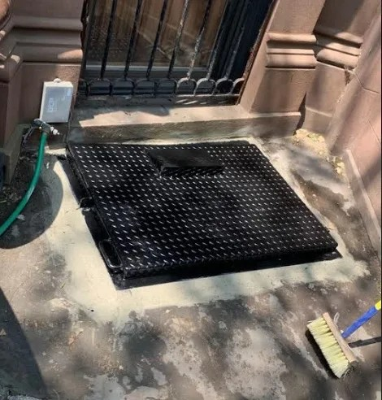
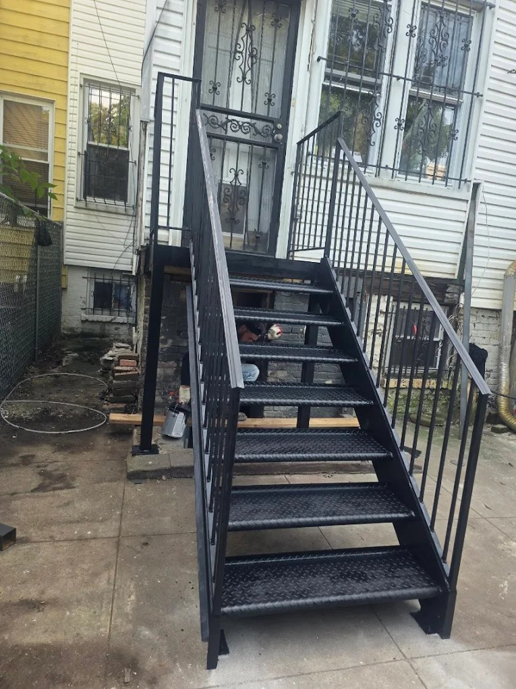

Iron Works Options in East New York and Surrounding Brooklyn Areas
Proudly serving Brooklyn and the surrounding communities.
Steel Masters NYCProudly serving Brooklyn and the surrounding communities.
Steel Masters NYCEast New York sits at the eastern edge of Brooklyn, bordered by Brownsville to the west, Canarsie to the south, and the Queens border to the east. It is a neighborhood undergoing steady transformation, with an active mix of longtime homeowners, commercial property managers, and new construction developers all seeking reliable metalwork services. Iron works demand in East New York and its surrounding Brooklyn communities — Brownsville, Cypress Hills, and Highland Park — centers on practical applications: sidewalk cellar doors, steel staircases, security caging, rolldown gates, and structural steel alterations. This guide examines what iron works options are available to property owners in this part of Brooklyn, what to expect from the installation process, and why choosing a fabricator with deep local roots matters more in East New York than almost anywhere else in the borough.
Steel Masters NYC has been Brooklyn's go-to steel fabricator for iron works and metal fabrication since 1972, and the company's location at 135 Liberty Ave — ZIP 11212, directly in the heart of the neighborhoods described in this guide — makes it uniquely accessible to property owners throughout East New York, Brownsville, and Cypress Hills. The Steel Masters NYC team fabricates and installs the full range of structural and architectural steel products that East New York's residential and commercial properties require, from Economaster trash bin enclosures to custom steel staircases and reinforced sidewalk cellar doors. iron works Brooklyn
East New York's building stock — predominantly two- and three-family homes interspersed with commercial retail strips and a growing number of larger residential developments — creates steady demand for a consistent set of iron works applications. Sidewalk cellar door replacements are among the most common requests, as the neighborhood's older housing stock has many original cellar doors that have deteriorated beyond serviceable condition. Steel staircases for both interior and exterior applications are regularly required for multi-family buildings undergoing renovation. Security-focused applications including expanded metal caging and rolldown gates are also in high demand along commercial corridors in East New York, particularly on Atlantic Avenue and Pennsylvania Avenue.

Brownsville and Cypress Hills, immediately adjacent to East New York, share many of the same property characteristics and iron works needs. Brownsville's dense residential fabric and its commercial strips along Pitkin Avenue represent a consistent market for cellar door replacement, pipe railing installation, and structural steel alterations for building renovations. Cypress Hills, bridging Brooklyn and Queens, sees demand for custom metal fabrication that spans both boroughs' requirements — a situation where a fabricator with broad NYC experience is particularly valuable. Steel Masters NYC's familiarity with Kings County building stock and its proximity to these neighborhoods makes it the practical choice for property owners who need responsive, locally-grounded metalwork. custom steel stairs NYC
Atlantic Avenue's commercial corridor in East New York represents one of the denser concentrations of iron works demand in eastern Brooklyn. Retail storefronts along this stretch require rolldown gates and coiling doors for overnight security, Economaster trash bin enclosures to comply with sanitation requirements, and expanded metal security caging to protect utility infrastructure. Building owners undertaking renovations often need structural steel alterations to accommodate new floor plans or additional load-bearing requirements. A steel fabricator with experience on commercial projects along high-traffic urban corridors — where work must be completed with minimal disruption to adjacent businesses — is essential for these types of applications.

ZIP code 11212 encompasses the core of Brownsville and portions of East New York, making it one of the highest-density zones for steel fabrication demand in Brooklyn. The concentration of pre-war residential buildings, active commercial streets, and ongoing development activity creates a continuous pipeline of metalwork projects. Steel Masters NYC's shop at 135 Liberty Ave sits within this ZIP code, meaning crews can mobilize quickly to any job site in 11212 and surrounding areas including 11207 (East New York) and 11233 (Brownsville), with minimal transit time. For property owners and building managers who value responsive service, this geographic advantage translates into faster project starts and more flexible scheduling.
East New York's ongoing renovation market — driven by a mix of community development investment, private landlord upgrades, and new construction — demands iron works contractors who understand the local construction environment. Brooklyn's borough office has specific patterns of inspection focus, project processing timelines, and documentation requirements that a locally-embedded steel fabricator navigates as a matter of routine. For property owners managing renovation projects in East New York, working with a Brooklyn-based company like Steel Masters NYC means fewer surprises during the project process, faster mobilization when the project is ready to proceed, and access to a team that has likely worked on properties within blocks of yours before.
Highland Park, straddling the border of Brooklyn and Queens along the northern edge of East New York, is a residential neighborhood with a particular concentration of attached and semi-attached homes that frequently require iron works upgrades. Exterior steel staircases — both for front entry access and rear yard egress — are among the most common applications in Highland Park's single and two-family homes. Roof railings to satisfy insurance and safety requirements are another frequent project type. Pipe railings along front stoops and basement entries complete the picture of residential iron works demand in this part of Brooklyn. Steel Masters NYC fabricates custom solutions for all of these applications, ensuring both professional installation quality and the aesthetic quality that Highland Park homeowners expect.
Steel Masters NYC serves customers throughout Brooklyn and Kings County, including East New York, Brownsville, Cypress Hills, Highland Park, Canarsie, East Flatbush, Crown Heights, Bed-Stuy, and Bushwick. Whether you're in the 11207 ZIP or anywhere across the borough, our iron works and steel fabrication team is ready to help with your project.